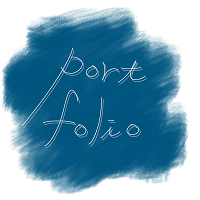

サンプル収集の単純化(2021/08/09)
●収集するフレーズをひとつに絞る
感情こめ方を指定して、フレーズも発話者に委ねるのはサンプル収集として発話者の負担が大きすぎる。
そのため、独自に収集するデータは、データ形式もこちらで揃える形にして、『ボイシー、私の声を聴いて。』というフレーズと発話者の年齢性別のみに絞った。
●サンプル収集の進捗
現在、集まっているサンプルの内訳は…
女性→17才1名、21才7名、51才1名、52才1名、54才1名、81才1名。
男性→17才1名、28才1名、55才1名
計15名
身の周りの人からの収集となると、どうしても同世代の同性のものが多くなってしまい、次点で親世代のものが多くなっている。
緊急事態宣言が発令され、外でのサンプル収集の実施を如何しようか、何とも困ったなぁというところである。
やるとすれば、神大MMキャンパスの一階共用フロアにいる人々からと考えているが、街頭や人の多い施設は道路や土地の使用許可が複雑なのでもう少し調べる必要あり。